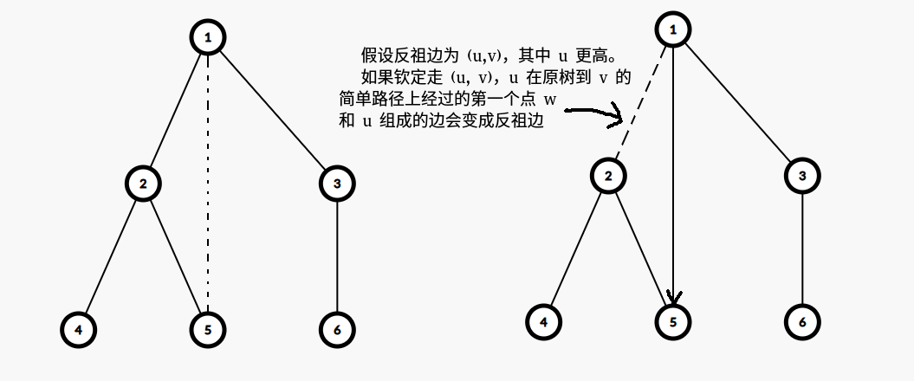

键入以搜索…
匹配算法：把输入按空格拆分，单独匹配每一段输入（不区分大小写，仅匹配文章文本内容），输出取或后的结果。
模糊搜索似乎很难搞，目前没有相关打算。
键入以搜索…
匹配算法：把输入按空格拆分，单独匹配每一段输入（不区分大小写，仅匹配文章文本内容），输出取或后的结果。
模糊搜索似乎很难搞，目前没有相关打算。
和 Aug 9th 的杂题不太能合并，所以分开了
https://www.luogu.com.cn/problem/P3479
显然可以贪心，不妨从下到上，记录当前遍历过的、空余出来的灭火器（其实算的是可以供给的房间数）和还未分配灭火器的房间，按距离为 \(0\sim k\) 分组。
不难发现如果在某个点 \(u\) 处存在距离为 \(k\) 的空闲灭火器，可以贪心地分配给 \(u\)；如果存在距离为 \(k\) 的未分配房间，也可以在 \(u\) 处放置灭火器并分配给这些房间。类似地，进行两两配对一定是不劣的。
发现同子树内距离为 \(k-1\) 的点对留到 \(fa\) 再匹配是不行的，因为这时距离会变成 \(k+1\)，不能匹配上；可以感受到这样是更劣的。
然后就可以做了，根节点特殊乱贪心一下就行了。记得开 long long。
#include <bits/stdc++.h>
#define int long long
signed main() {
#ifdef ONLINE_JUDGE
std::ios::sync_with_stdio(false);
std::cin.tie(nullptr), std::cout.tie(nullptr);
#else
std::freopen(".in", "r", stdin);
std::freopen(".out", "w", stdout);
const auto stime = std::chrono::steady_clock::now();
#endif
int n, s, k, res = 0;
std::cin >> n >> s >> k;
std::vector<std::vector<int> > g(n + 1), p(n + 1, std::vector<int> (k + 1)), q(n + 1, std::vector<int> (k + 1));
for (int i = 1, x, y; i < n; ++i) {
std::cin >> x >> y;
g[x].push_back(y), g[y].push_back(x);
}
std::function<void(int, int)> DFS = [&](int x, int fa) {
for (auto i : g[x])
if (i != fa) {
DFS(i, x);
for (int j = 0; j < k; ++j)
p[x][j + 1] += p[i][j], q[x][j + 1] += q[i][j];
}
++q[x][0];
if (x != 1) {
int v = (q[x][k] + s - 1) / s;
p[x][0] = v * s, res += v;
for (int i = 0; i <= k; ++i) {
int v = std::min(p[x][i], q[x][k - i]);
p[x][i] -= v, q[x][k - i] -= v;
}
for (int i = 0; i < k; ++i) {
int v = std::min(p[x][i], q[x][k - 1 - i]);
p[x][i] -= v, q[x][k - 1 - i] -= v;
}
}
else {
// std::cerr << res << '\n';
int sum = 0ll, r = 0;
for (int i = k; ~i; --i) {
sum += p[x][k - i];
// std::cerr << sum << '\n';
int v = std::min(sum, q[x][i]);
sum -= v, q[x][i] -= v;
r += q[x][i];
}
res += (r + s - 1) / s;
}
return;
};
DFS(1, -1);
std::cout << res << '\n';
#ifndef ONLINE_JUDGE
std::cerr << std::fixed << std::setprecision(6) << std::chrono::duration<double> (std::chrono::steady_clock::now() - stime).count() << "s\n";
#endif
return 0;
}https://www.becoder.com.cn/contest/6502/problem/3
题意：给定 \(n\) 堆货物，每堆货物有重量 \(v_i\) 和一个参数 \(a_i\)。有一个初始负载为 \(0\)、负载上限为 \(c\) 的机器人，从 \(1\) 到 \(n\) 遍历这些货物，对每一处货物执行以下操作，直到清空这堆货物：
- 当前负载未满：可以选择进行装载直到达到负载上限，或货物清空。花费 \(a_i\) 的代价。
- 不管当前负载满没满：可以选择清空当前负载，花费 \(b\) 的代价。
每一处可以任意操作，要求遍历完之后机器人负载为 \(0\)，问最小代价。\(n\le 2\times 10^5,c\le 10^9\)。
题面是重构过的，原来的题面太有歧义了。绝大多数人没做出来就是因为没看懂题吧！
考虑暴力，可以想到令 \(f_{i,j}\) 表示处理完 \(i\) 过后负载为 \(j\) 的最小代价（显然 \(f_{i,c}\) 和 \(f_{i,0}\) 是等效的，故舍弃前者）。记 \(k=\left\lceil\dfrac {v_i}c\right\rceil,w=(v_i\bmod c - 1)\bmod c+1\)，那么有：
\[ f_{i,(j+v_i)\bmod c}\gets f_{i-1,j}+k\cdot a_i+(k-1)\cdot b + \begin{cases} b&j+w=c\\ a_i+b&j+w> c\\ 0&\text{otherwise} \end{cases}\\ f_{i,0}\gets f_{i,j}+b \]
发现 \(f_{i-1}\) 和 \(f_i\) 之间是存在对应关系的，所以考虑直接继承（真实的 \(0\) 应该位于 \(-s_i\) 的位置），再做全局加、区间加，\(f_{i,0}\) 的转移是全局 min，线段树维护即可；每次只会新增一个状态，动态开点即可。
#include <bits/stdc++.h>
const int maxn = 5e6 + 5;
const __int128 inf = 1e18;
struct {
int l, r;
__int128 u, d;
} t[maxn];
#define lt t[p].l
#define rt t[p].r
int tot;
void pushdown(int p) {
if (t[p].d) {
t[lt].d += t[p].d, t[lt].u += t[p].d;
t[rt].d += t[p].d, t[rt].u += t[p].d;
t[p].d = 0ll;
}
return;
}
void upd(int &p, int l, int r, int x, __int128 v) {
if (!p)
p = ++tot, t[p].u = v;
else
t[p].u = std::min(t[p].u, v);
if (l == r)
return;
pushdown(p);
int mid = (l + r) >> 1;
if (x <= mid)
upd(lt, l, mid, x, v);
else
upd(rt, mid + 1, r, x, v);
return;
}
void add(int p, int l, int r, int ql, int qr, __int128 v) {
if (!p)
return;
if (ql <= l && r <= qr) {
t[p].d += v, t[p].u += v;
return;
}
int mid = (l + r) >> 1;
pushdown(p);
if (ql <= mid)
add(lt, l, mid, ql, qr, v);
if (qr > mid)
add(rt, mid + 1, r, ql, qr, v);
t[p].u = std::min(t[lt].u, t[rt].u);
return;
}
__int128 ask(int p, int l, int r, int x) {
if (l == r)
return t[p].u;
int mid = (l + r) >> 1;
pushdown(p);
if (x <= mid)
return ask(lt, l, mid, x);
return ask(rt, mid + 1, r, x);
}
#undef lt
#undef rt
int main() {
#ifdef ONLINE_JUDGE
std::ios::sync_with_stdio(false);
std::cin.tie(nullptr), std::cout.tie(nullptr);
std::freopen("robot.in", "r", stdin);
std::freopen("robot.out", "w", stdout);
#else
std::freopen("ex_robot4.in", "r", stdin);
std::freopen(".out", "w", stdout);
const auto stime = std::chrono::steady_clock::now();
#endif
t[0].u = inf;
int n, b, c, p0 = 0, rt = 0;
std::cin >> n >> c >> b;
std::vector<int> a(n + 1), v(n + 1);
for (int i = 1; i <= n; ++i)
std::cin >> a[i];
for (int i = 1; i <= n; ++i)
std::cin >> v[i];
upd(rt, 0, c - 1, 0, 0ll);
for (int i = 1; i <= n; ++i) {
__int128 k = (v[i] + c - 1) / c, w = (v[i] % c == 0 ? c : v[i] % c);
t[rt].d += k * a[i] + (k - 1) * b;
t[rt].u += k * a[i] + (k - 1) * b;
if (w <= c)
add(rt, 0, c - 1, (c - w + p0) % c, (c - w + p0) % c, b);
if (w != 1) {
int l = (c - w + p0 + 1) % c, r = (p0 + c - 1) % c;
if (l <= r)
add(rt, 0, c - 1, l, r, a[i] + b);
else {
add(rt, 0, c - 1, 0, r, a[i] + b);
add(rt, 0, c - 1, l, c - 1, a[i] + b);
}
}
p0 = (p0 + c - v[i] % c) % c;
upd(rt, 0, c - 1, p0, t[rt].u + b);
}
std::cout << (long long)ask(rt, 0, c - 1, p0) << '\n';
#ifndef ONLINE_JUDGE
std::cerr << std::fixed << std::setprecision(6) << std::chrono::duration<double> (std::chrono::steady_clock::now() - stime).count() << "s\n";
#endif
return 0;
}https://www.becoder.com.cn/contest/6502/problem/4
题意：给定初始为全 \(0\) 的数组 \(a_{1\sim n + 1}\) 和 \(n\) 次单点 +1 操作，每次操作后，求解：
令 \(a\) 的前缀和数组为 \(s\)，找到一个最小的 \(k\)，使得对于每个 \(i\)，均有 \(k\cdot i\ge s_i\) 成立。
\(n\le 10^6\)，时限 0.5s。
考场上最后 10min 拿到题，憋了一个能拿到 96pts 的假做法：注意到前缀和是单增的，需要维护最大的 \(\dfrac {s_i}i\)，由于后缀 +1 带来的影响很小，所以可以猜测在大多数情况下最大的 \(i\) 只会在原来的和修改的点之间变化。只用 10 行的核心代码就能拿到很多分。但是居然有这么多，可能出题人都没有想到真有人敢交这种做法吧。
#include <bits/stdc++.h>
int main() {
std::freopen("doll.in", "r", stdin);
std::freopen("doll.out", "w", stdout);
std::ios::sync_with_stdio(false);
std::cin.tie(nullptr), std::cout.tie(nullptr);
auto stime = std::chrono::steady_clock::now();
int n, res = 0;
std::cin >> n;
std::vector<int> bit(n + 2);
auto lowbit = [](int x) {
return x & -x;
};
auto add = [&](int x) {
for (; x <= n + 1; x += lowbit(x))
++bit[x];
return;
};
auto ask = [&](int x) {
int res = 0;
for (; x; x -= lowbit(x))
res += bit[x];
return res;
};
int p = 1;
for (int i = 1, x; i <= n; ++i) {
std::cin >> x, add(++x);
long long s = ask(x), t = ask(p);
if (s * p == t * x ? x > p : s * p > t * x)
p = x;
else
s = t;
if (s > p * res)
++res;
std::cout << res << ' ';
}
std::cout << '\n';
std::cerr << std::chrono::duration<double>(std::chrono::steady_clock::now() - stime).count() << '\n';
return 0;
}很容易写出暴力，观察样例就能发现每次修改后答案最多增加 \(1\)。记当前答案为 \(res\)，线段树维护 \(s_i-res\cdot i\) 的最小值，若其为负则 res++，然后重构线段树（等差数列和 min 不兼容）。
怎么又有不等式 😱
目的是在本来合法的范围里找到新的不合法值。考虑合法范围：\(s_i-res\cdot i\ge 0\)，解一下得到 \(i\le \dfrac {s_i}{res}\)，放缩得到 \(i\le\dfrac {n}{res}\)，每次 \(res\) 变化时只重构 \(\dfrac {n}{res}\) 以前的位置，重构的总长是 \(O(n\ln n)\) 的。（线段树建树是线性的）
#include <bits/stdc++.h>
const int maxn = 1e6 + 5;
const int inf = 0x3f3f3f3f;
struct {
int l, r, u, d;
} t[maxn << 2];
#define lt (p << 1)
#define rt (lt | 1)
void bld(int p, int l, int r) {
t[p].u = t[p].l = l, t[p].r = r;
if (l == r)
return;
int mid = (l + r) >> 1;
bld(lt, l, mid), bld(rt, mid + 1, r);
return;
}
void pushdown(int p) {
if (t[p].d) {
t[lt].d += t[p].d, t[rt].d += t[p].d;
t[lt].u -= t[p].d, t[rt].u -= t[p].d;
t[p].d = 0;
}
return;
}
void add(int p, int x) {
if (x <= t[p].l) {
++t[p].d, --t[p].u;
return;
}
pushdown(p);
int mid = (t[p].l + t[p].r) >> 1;
if (x <= mid)
add(lt, x);
add(rt, x);
t[p].u = std::min(t[lt].u, t[rt].u);
// printf("[%d, %d]: %d, [%d, %d]: %d\n", t[p].l, mid, t[lt].u, mid + 1, t[p].r, t[rt].u);
return;
}
void rem(int p, int r) {
if (t[p].l == t[p].r) {
t[p].u += t[p].l;
return;
}
pushdown(p);
int mid = (t[p].l + t[p].r) >> 1;
if (r <= mid)
rem(lt, r), t[rt].u = inf;
else
rem(lt, r), rem(rt, r);
t[p].u = std::min(t[lt].u, t[rt].u);
return;
}
#undef lt
#undef rt
int main() {
#ifdef ONLINE_JUDGE
std::ios::sync_with_stdio(false);
std::cin.tie(nullptr), std::cout.tie(nullptr);
std::freopen("doll.in", "r", stdin);
std::freopen("doll.out", "w", stdout);
#else
std::freopen(".in", "r", stdin);
std::freopen(".out", "w", stdout);
const auto stime = std::chrono::steady_clock::now();
#endif
int n;
std::cin >> n;
bld(1, 1, n + 1);
for (int i = 1, x, res = 1, now = n; i <= n; ++i) {
std::cin >> x;
if (x <= now)
add(1, ++x);
if (t[1].u < 0) {
std::cout << ++res << ' ';
rem(1, now = n / res);
}
else
std::cout << res << ' ';
// puts("");
}
std::cout << '\n';
#ifndef ONLINE_JUDGE
std::cerr << std::fixed << std::setprecision(6) << std::chrono::duration<double> (std::chrono::steady_clock::now() - stime).count() << "s\n";
#endif
return 0;
}https://atcoder.jp/contests/abc419/tasks/abc419_e
模意义下的数列全等，可以对应原数组全等、差分全等、前缀和全等（都是模意义下的，还有其他的一些线性和非线性的变换也可以）
本着修改的点尽量少的想法，如果题目给定单点修改就可以在原数组上做文章，给定区间修改可以考虑差分数组，前缀和对于一些区间查询有优势
其他两种用得也很多，像这题只需要用原数组全等就可以做了
#include <bits/stdc++.h>
const int inf = 0x3f3f3f3f;
int main() {
#ifdef ONLINE_JUDGE
std::ios::sync_with_stdio(false);
std::cin.tie(nullptr), std::cout.tie(nullptr);
#else
std::freopen(".in", "r", stdin);
std::freopen(".out", "w", stdout);
const auto stime = std::chrono::steady_clock::now();
#endif
int n, m, l;
std::cin >> n >> m >> l;
std::vector<int> a(n + 1);
for (int i = 1; i <= n; ++i)
std::cin >> a[i];
std::vector<std::vector<int> > u(l + 1, std::vector<int> (m));
for (int i = 1; i <= l; ++i)
for (int j = 0; j < m; ++j)
for (int k = i; k <= n; k += l)
u[i][j] += (j + m - a[k]) % m;
std::vector<std::vector<int> > f(l + 1, std::vector<int> (m, inf));
f[0][0] = 0;
for (int i = 1; i <= l; ++i)
for (int j = 0; j < m; ++j)
for (int k = 0; k < m; ++k)
f[i][(j + k) % m] = std::min(f[i][(j + k) % m], f[i - 1][j] + u[i][k]);
std::cout << f[l][0] << '\n';
#ifndef ONLINE_JUDGE
std::cerr << std::fixed << std::setprecision(6) << std::chrono::duration<double> (std::chrono::steady_clock::now() - stime).count() << "s\n";
#endif
return 0;
}https://atcoder.jp/contests/abc419/tasks/abc419_f
原题意转化为在 AC 自动机上走 \(L\) 步，要求经过 \(n\) 个叶子的方案数。不太可做，转化成容斥（令字符串终点不可达）。在外层枚举步数暴力游走。
要求恰好走 \(L\) 步，也可以用矩阵；但原图很稀疏，所以矩阵并没有优势。
#include <bits/stdc++.h>
const int mod = 998244353;
int tot = 1, T[805][26], fail[805];
int main() {
#ifdef ONLINE_JUDGE
std::ios::sync_with_stdio(false);
std::cin.tie(nullptr), std::cout.tie(nullptr);
#else
std::freopen(".in", "r", stdin);
std::freopen(".out", "w", stdout);
const auto stime = std::chrono::steady_clock::now();
#endif
int n, l;
std::cin >> n >> l;
std::vector<std::string> a;
{
std::vector<std::string> s(n + 1);
for (int i = 1; i <= n; ++i)
std::cin >> s[i];
for (int i = 1; i <= n; ++i) {
bool flag = 1;
for (int j = 1; j <= n; ++j)
if (j != i)
if (s[j].find(s[i]) != std::string::npos) {
flag = 0;
break;
}
if (flag)
a.push_back(s[i]);
}
n = (int)a.size();
}
std::vector<int> pos(n);
for (int i = 0; i < n; ++i) {
int &p = pos[i];
for (auto j : a[i]) {
if (!T[p][j - 'a'])
T[p][j - 'a'] = tot++;
p = T[p][j - 'a'];
}
}
{
std::queue<int> q;
for (int i = 0; i < 26; ++i)
if (T[0][i])
q.push(T[0][i]);
for (; !q.empty(); ) {
int u = q.front();
q.pop();
for (int i = 0; i < 26; ++i)
if (T[u][i]) {
int v = T[u][i];
fail[v] = T[fail[u]][i];
q.push(v);
}
else
T[u][i] = T[fail[u]][i];
}
}
auto res = 0ll;
int siz = 1 << n;
for (int i = 0; i < siz; ++i) {
std::vector<int> tag(tot);
for (int j = 0; j < n; ++j)
if ((i >> j) & 1)
tag[pos[j]] = 1;
std::vector<std::vector<long long> > f(l + 1, std::vector<long long> (tot));
f[0][0] = 1ll;
for (int j = 0; j < l; ++j)
for (int k = 0; k < tot; ++k)
for (int a = 0; a < 26; ++a) {
if (!tag[T[k][a]])
(f[j + 1][T[k][a]] += f[j][k]) %= mod;
}
int k = (__builtin_popcount(i) & 1 ? mod - 1 : 1);
auto s = 0ll;
for (int j = 0; j < tot; ++j)
if (!tag[j])
(s += f[l][j]) %= mod;
(res += k * s) %= mod;
}
std::cout << res << '\n';
#ifndef ONLINE_JUDGE
std::cerr << std::fixed << std::setprecision(6) << std::chrono::duration<double> (std::chrono::steady_clock::now() - stime).count() << "s\n";
#endif
return 0;
}https://atcoder.jp/contests/abc419/tasks/abc419_g
很新的性质。考虑『以 \(1\) 为起点的简单路径数』和反祖边数量的关系：选定一条反祖边必须被经过时（显然只有一种可能的经过方向），树的形态发生变化：

也就是说，一种反祖边的选取方案对应一种树，遍历其从 \(1\) 开始的简单路径复杂度为 \(O(n)\)。设反祖边数量为 \(k\)，那么合法的方案数不超过 \(2^k\)，暴力 DFS 的整个图复杂度为 \(O(2^k\cdot n)\)。
发现很多跟反祖边无关的遍历是不必要的（只有一种走法，可以设成边权），考虑对所有连接反祖边的点建立虚树，并把原树上的反祖边也移到虚树上，就能 \(O(2^k\cdot k)\) 解决问题。
#include <bits/stdc++.h>
int main() {
#ifdef ONLINE_JUDGE
std::ios::sync_with_stdio(false);
std::cin.tie(nullptr), std::cout.tie(nullptr);
#else
std::freopen(".in", "r", stdin);
std::freopen(".out", "w", stdout);
const auto stime = std::chrono::steady_clock::now();
#endif
int n, m;
std::cin >> n >> m;
std::vector<std::vector<int> > g(n + 1), g1(n + 1);
std::vector<std::vector<std::pair<int, int> > > g2(n + 1);
for (int x, y; m--; ) {
std::cin >> x >> y;
g[x].push_back(y), g[y].push_back(x);
}
std::vector<int> tag(n + 1), vis(n + 1);
std::vector<std::pair<int, int> > be;
std::function<void(int, int)> DFS = [&](int x, int fa) {
static int now = 0;
tag[x] = 1, vis[x] = ++now;
for (auto i : g[x])
if (!tag[i]) {
// fprintf(stderr, "%d -> %d\n", x, i);
g1[x].push_back(i), DFS(i, x);
}
else if (i != fa && vis[i] < vis[x])
be.emplace_back(i, x);
return;
};
DFS(1, -1);
{ // 求虚树
std::vector<int> dep(n + 1), fa(n + 1), top(n + 1), siz(n + 1), son(n + 1), dfn(n + 1), rfn(n + 1);
std::function<void(int)> DFS = [&](int x) {
siz[x] = 1;
for (auto i : g1[x]) {
dep[i] = dep[x] + 1;
fa[i] = x, DFS(i);
siz[x] += siz[i];
if (siz[i] > siz[son[x]])
son[x] = i;
}
return;
};
DFS(1);
DFS = [&](int x) {
static int now = 0;
dfn[x] = ++now;
if (son[x])
top[son[x]] = top[x], DFS(son[x]);
for (auto i : g1[x])
if (i != son[x])
top[i] = i, DFS(i);
rfn[x] = now;
// printf("%d: [%d, %d]\n", x, dfn[x], rfn[x]);
return;
};
top[1] = 1, DFS(1);
auto getLCA = [&](int x, int y) {
for (; top[x] != top[y]; x = fa[top[x]])
if (dep[top[x]] < dep[top[y]])
std::swap(x, y);
return dep[x] < dep[y] ? x : y;
};
tag.assign(n + 1, 0);
tag[1] = tag[n] = 1;
for (auto [u, v] : be)
tag[u] = 1, tag[v] = 1;
std::vector<int> p;
for (int i = 1; i <= n; ++i)
if (tag[i])
p.push_back(i);
std::sort(p.begin(), p.end(), [&](int i, int j) { return dfn[i] < dfn[j]; });
for (int i = 1; i < (int)p.size(); ++i) {
int fa = getLCA(p[i], p[i - 1]);
if (!tag[fa])
tag[fa] = 1;
}
p.clear();
for (int i = 1; i <= n; ++i)
if (tag[i])
p.push_back(i);
std::sort(p.begin(), p.end(), [&](int i, int j) { return dfn[i] < dfn[j]; });
std::vector<int> st;
for (auto i : p) {
if (st.empty())
st.push_back(i);
else {
for (; rfn[st.back()] < dfn[i]; st.pop_back());
g2[st.back()].emplace_back(i, dep[i] - dep[st.back()]);
g2[i].emplace_back(st.back(), dep[i] - dep[st.back()]);
// printf("add (%d, %d): %d\n", st.back(), i, dep[i] - dep[st.back()]);
st.push_back(i);
}
}
for (auto [u, v] : be) {
g2[u].emplace_back(v, 1), g2[v].emplace_back(u, 1);
// printf("# add(%d, %d): 1\n", u, v);
}
}
tag.assign(n + 1, 0);
std::vector<int> res(n + 1);
DFS = [&](int x, int s) {
if (x == n)
++res[s];
tag[x] = 1;
for (auto [i, w] : g2[x])
if (!tag[i])
DFS(i, s + w);
tag[x] = 0;
return;
};
DFS(1, 0);
for (int i = 1; i < n; ++i)
std::cout << res[i] << ' ';
std::cout << '\n';
#ifndef ONLINE_JUDGE
std::cerr << std::fixed << std::setprecision(6) << std::chrono::duration<double> (std::chrono::steady_clock::now() - stime).count() << "s\n";
#endif
return 0;
}